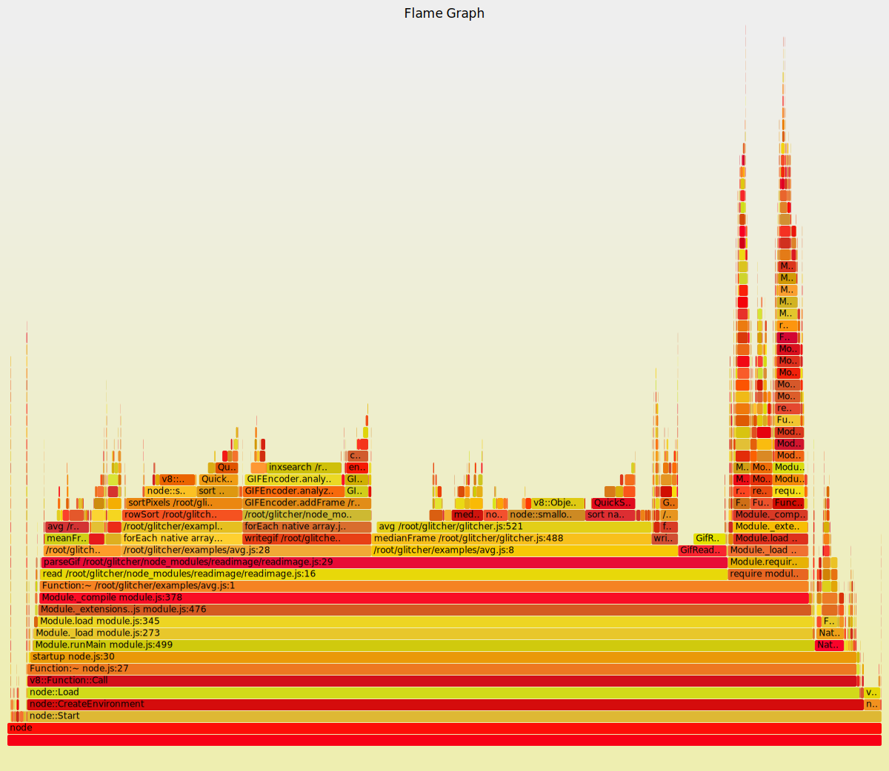
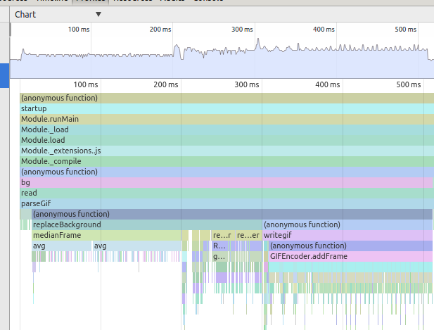
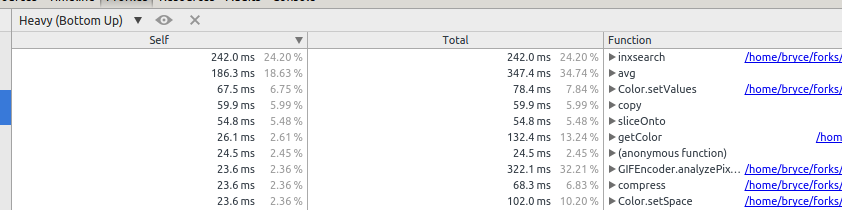
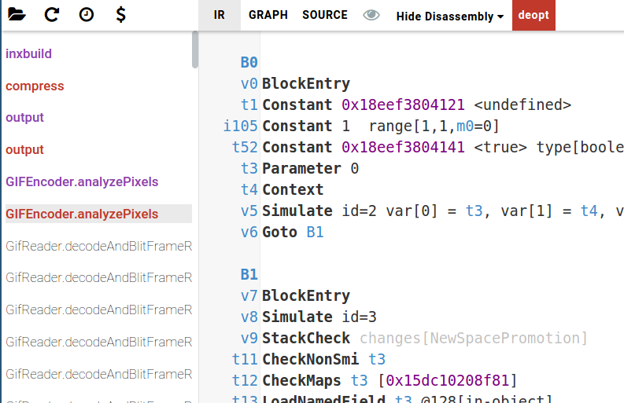
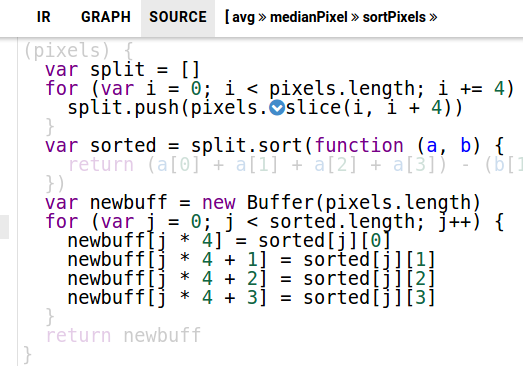

Node Buffers, Performance, and Image Glitching
A Performance Optimization Case Study
Topics
- revisit.link
- buffers
- Node.js performance analysis tools
- case study
revisit.link
- art project started by @ednapiranha
- api specification for image glitching/manipulaiton
glitcher
Image Format
Based off HTML5 Canvas ImageData, plus animation frames
// readimage.Image
{
width: 200,
height: 200,
frames: [
{ data: frame_1_rgba_buffer, delay: 100 },
{ data: frame_2_rgba_buffer, delay: 100 }
]
}
Frame.data Format
Each frame's data property is the same as HTML5 Canvas ImageData "data" except Node.js buffers instead of Uint8ClampedArray
// A two pixel image data
Buffer([
100, // RED
100, // GREEN
100, // BLUE
255, // ALPHA
200, // RED
0, // GREEN
99, // BLUE
255 // ALPHA
])
Example
A 50's TV Emulation
function fiftiesTv(frameData, snowFrequency) {
for (var i = 0; i < frameData.length; i+=4) {
var maxSaturation = Math.max.apply(null, [
frameData[i], frameData[i+1], frameData[i+2]
])
// Add a glitchy "snowy" effect
if (maxSaturation % snowFrequency === 0) maxSaturation = 255
frameData[i] = maxSaturation
frameData[i+1] = maxSaturation
frameData[i+2] = maxSaturation
}
}
Result

Buffers
Buffers are a Node.js primitive for dealing with binary data.
- Contiguous bytes (0-255) in memory
- stored outside V8 heap
- many operations are shallow copies
- heavily optimized for performance
- simple list-like API
- fast to allocate, NOT CLEARED OUT
Buffer API
- new Buffer(array), new Buffer(size), new Buffer(string)
- buffer.length for length (bytes), buffer[index] to get/set direct byte
- Buffer.concat([list, of, buffers])
- buffer.slice, buffer.copy, buffer.fill
- buffer.readUint32BE, buffer.writeUint32BE and many more
Performance
Buffers are fast, Node.js is fast... safe to assume performance issues are in the code and algorithms I wrote.
Performance Analysis
Measure to make informed decisions!
Performance Tooling
I'm going to talk about three different types of performance data.
- Flame Graphs
- Timeline Charts
- Optimizing Compiler Output
Performance Tooling in Node.js
The unfortunate reality of performance tooling with Node.js:
- Immature compared to older platforms
- V8 bindings are old
- Not very cross-platform
Flame Graphs
Y = stack depth, X = % of total cpu time spent (Instructions)
Flame Graphs
Most useful:
- when you want to collect for a long period of time
- to identify where to focus
- capture C++ time too
Flame Graphs
Caveats
- Easiest on SmartOS using dtrace (still not easy)
- Requires 0.11+ for good output
- Aggregation removes time axis
- Can be hard to analyze
- Inlined functions can be hidden
Timeline Graphs
Y = stack depth, X = time (v8-profiler)
Timeline Graphs
chart view, some aggregation
Timeline Graphs
Most useful:
- want to analyze very targeted location of code
- much better cross-platform support
- interested in V8/JavaScript operation
Timeline Graphs
Caveats
- Hard to analyze if time frame is too long
- Requires 0.11+ for good output
- No aggregation, can be hard to spot patterns
- Inlined functions can be hidden
Optimizing Compiler Output
Deoptimizations and compiler output (IRHydra2)
Optimizing Compiler Output
Most useful:
- want insight into deoptimizations of functions
- want to see exactly what your code does
- for very fine tuning
- to show where functions are inlined
Optimizing Compiler Output
Caveats
- Can be extremely hard to understand
- Output not tied to performance/timing data
- Not helpful if you have good code but a bad algo
Case Study
From the logs I know that one of the slowest glitches is `replaceBackground`.
When given an animated gif it calculates a "background" frame, and then for each frame replaces the background with a provided replacement function.
function replaceBackground(frames, replacer, tolerance) {
tolerance = tolerance != null ? tolerance : 50
var background = medianFrame(frames)
for (var i = 0; i < frames.length; i++) {
var dupe = copy(frames[i].data)
replacer(dupe)
var rgba = frames[i].data
for (var j = 0; j < background.length; j += 4) {
var rDiff = Math.abs(rgba[j] - background[j])
var gDiff = Math.abs(rgba[j+1] - background[j+1])
var bDiff = Math.abs(rgba[j+2] - background[j+2])
if (!(rDiff > tolerance || gDiff > tolerance || bDiff > tolerance)) {
var start = (j > dupe.length) ? 0 : j
rgba[j] = dupe[start + 0]
rgba[j+1] = dupe[start + 1]
rgba[j+2] = dupe[start + 2]
}
}
}
}
Step 1: make a test and time it
/usr/bin/time node bg_fg.js img/spaceballs.gif
3.46user 0.02system 0:03.49elapsed 99%CPU (0avgtext+0avgdata 56308maxresident)k
0inputs+3232outputs (0major+11355minor)pagefaults 0swaps
An Aside...
The gif format is strange... gif optimization isn't handled correctly in the reading library, hence the failed background detection here. However, we're still able to collect good data!
Tool 1: Flame Graph
Tool 2: Timeline Graph
var profiler = require("v8-profiler")
profiler.startProfiling("bg")
// ...
bg(orig, function (err, img) {
gifwriter(img, function (err, gif) {
var data = profiler.stopProfiling("bg")
fs.writeFileSync("bg.cpuprofile", JSON.stringify(data))
fs.writeFileSync("./output/bg.gif", gif)
})
})
Analysis
Two main things stand out: inxsearch and medianFrame. inxsearch is in a library, so for now let's focus on medianFrame.
The timeline chart shows medianFrame is calling avg which is calling sortPixels, which is the culprit of our perf issues.
function medianPixel(pixels) {
var sorted = sortPixels(pixels)
var mid = (sorted.length / 2) - ((sorted.length / 2) % 4)
return sorted.slice(mid, mid + 4)
}
function medianFrame(frames, alg) {
return avg(frames, medianPixel)
}
function avg(frames, alg) {
var len = frames[0].data.length
if (len === 1) {
return frames[0].data
}
var avgFrame = new Buffer(len)
for (var i = 0; i < len; i += 4) {
var pixels = new Buffer(4 * frames.length)
for (var j = 0; j < frames.length; j++) {
frames[j].data.copy(pixels, j * 4, i, i + 4)
}
var avgPixel = alg(pixels)
avgPixel.copy(avgFrame, i)
}
return avgFrame
}
function sortPixels(pixels) {
var split = []
for (var i = 0; i < pixels.length; i += 4) {
split.push(pixels.slice(i, i + 4))
}
var sorted = split.sort(function (a, b) {
return (a[0] + a[1] + a[2] + a[3]) - (b[0] + b[1] + b[2] + b[3])
})
var newbuff = new Buffer(pixels.length)
for (var j = 0; j < sorted.length; j++) {
newbuff[j * 4] = sorted[j][0]
newbuff[j * 4 + 1] = sorted[j][1]
newbuff[j * 4 + 2] = sorted[j][2]
newbuff[j * 4 + 3] = sorted[j][3]
}
return newbuff
}
Some Math
Our image is 480x222 pixels by 30 frames
480 * 222 = 106560 // number of sortPixels calls
each sorting an array of 30 pixels
Tool 3: IRHydra2

Analysis
Unfortunately IRHydra2 isn't much help for this issue, all our functions are inlined and never deopt.
Any Ideas?
Switch Algorithms!
Median calculation is slow because you need to sort. Let's try the mean instead
function meanPixel(pixels) {
if (pixels.length === 0) return new Buffer(4)
if (pixels.length === 4) return pixels
var p = new Buffer(4)
var r = 0, g = 0, b = 0, a = 0
for (var i = 0; i < pixels.length; i+= 4) {
r += pixels[i]
g += pixels[i + 1]
b += pixels[i + 2]
a += pixels[i + 3]
}
p[0] = (r / (pixels.length / 4)) >>> 0
p[1] = (g / (pixels.length / 4)) >>> 0
p[2] = (b / (pixels.length / 4)) >>> 0
p[3] = (a / (pixels.length / 4)) >>> 0
return p
}
/usr/bin/time node bg_fg.js img/spaceballs.gif
1.83user 0.03system 0:01.88elapsed 99%CPU (0avgtext+0avgdata 55316maxresident)k
0inputs+3104outputs (0major+11075minor)pagefaults 0swaps
From 3.49s to 1.88s!
Still slow!
Vastly improved by switching to mean from median. The output is different but acceptable. I'm convinced we could make it much faster by:
- Fixing inxsearch
- Finding a better algorithm than per-pixel averages
- Some other deopt prevention by cleaning up polymorphics
Resources
chat.nothingissacred.org
Keyword-triggered glitch chat using this library, try:
- predator
- green (red, white, blue, etc.)
- solarize
- grayscale
- bars
- Full list here